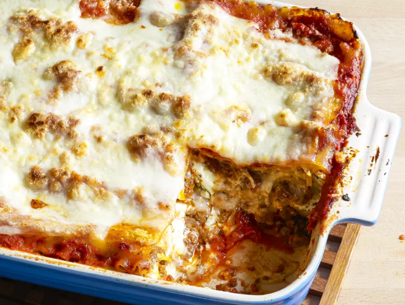

Lasagna

Hot to make Lasagna
- Making lasagna can be time-consuming, but the results are well worth the wait.
- You'll find a detailed ingredient list and step-by-step instructions in the recipe below, but let's go over the basics:
Lasagna Ingredients
- Meat
- Onion and garlic
- Tomato products
- Spices and seasiongs
- Lasagna noodles
- Eggs